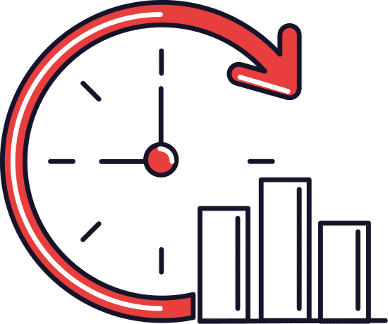

<ion-header [translucent]="true">
  <ion-toolbar color="header">
    <ion-buttons slot="start">
      <ion-back-button [defaultHref]="'/information/campanas/'+this.configSelected"></ion-back-button>
    </ion-buttons>
    <ion-title>
      <ion-label>
        <ion-text >
          <h2>Estadísticas</h2>
        </ion-text>
      </ion-label>
    </ion-title>
  </ion-toolbar>
</ion-header>

<ion-content class="background-gray">
  <ion-grid fixed>
    <!-- <div class="item-traslucent">
      <ion-item lines="none" >
        <ion-label [ngStyle]="{'margin-bottom': 0}">
          <ion-text>
            <p>{{configName}}</p>
            <p>{{institutionName}}</p>
          </ion-text>
        </ion-label>
      </ion-item>
    </div> -->
    <ng-container *ngIf="googleDataStudioUrl; then thenTemplateFrame; else elseTemplateFrame"></ng-container>
    <ng-template #thenTemplateFrame>
      <ion-row>
        <ion-col size="12" class="center">
          <!-- <iframe [src]="googleDataStudioUrl" frameborder="0" width="100%" [height]="mobHeight" allowfullscreen></iframe> -->
          <iframe [src]="googleDataStudioUrl" frameborder="0" class="iframe-responsive"  allowfullscreen></iframe>
        </ion-col>
      </ion-row>
    </ng-template>
    <ng-template #elseTemplateFrame>
      <div class="img-default-no-data item-traslucent">
        <ion-item lines="none">
          <ion-label class="ion-text-center">
            <p>Aún no se a establecido<br/>repositorio estadístico</p>
          </ion-label>
        </ion-item>
        
      </div>
    </ng-template>
  </ion-grid>
</ion-content>
